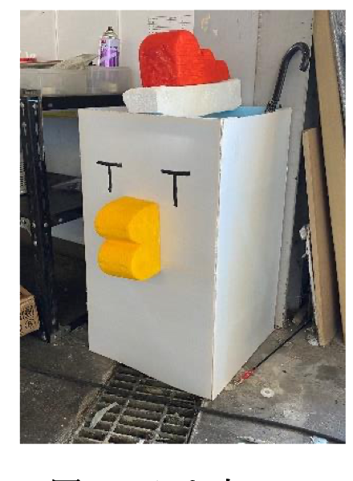

TOBITO OFFICIAL BRAND SITE
TOBITO とびとくん
飛べない鳥が、空を目指す。
「飛べない鳥が、」
「空を目指す。」
とびとくんは、
空をあきらめない。
ニワトリは大空を翔べない。だけど、夢を見ることまでは止められない。
部室の笑い声、バナナの差し入れ、夜の削り出し、琵琶湖の追い風。
その全部が、とびとくんの世界をつくっています。
とびとくんって、
何者？
TBT公式キャラクター / 空を目指すニワトリ。だけど、ただのマスコットではありません。 「飛べない鳥が、仲間となら空を目指せる」という、TBTのものづくり精神そのものです。
かわいく見えて、けっこう熱血。部室では翼リブの削り出しを見守り、本番では琵琶湖の風に向かって全力で羽ばたきます。

好物やセリフ、日常の描写は、このページのキャラクター設定です。
なぜ、ニワトリが空を目指すのか
TEAM BIRDMAN TRIAL
「飛べない」は、
物語の始まりだった。
ニワトリは本来、大空を渡ることのできない鳥。
しかし人間もまた、翼を持たずに生まれた存在です。だからこそ、設計し、部品を作り、試験を重ねる。とびとくんは、その挑戦をちょっとおかしく、でもまっすぐに象徴する存在です。
飛べない鳥のための翼
とびとくんは「飛べない」という弱点を隠しません。だからこそ、翼を持たない人間が人力で空へ挑むTBTの思想とぴったり重なります。
部室の空気を連れてくる
風洞、翼型、カーボン、ペダル。専門的な言葉の奥にある部員の笑い声や差し入れのバナナまで、とびとくんが物語に変えてくれます。
ここで初めて機体の世界へ
技術情報は主役ではなく、とびとくんの夢を支える舞台装置。スクロールの先で、二人乗り人力飛行機と琵琶湖フライトがゆっくり現れます。
とびとくんのある一日（物語）
キャンパスの吹き流しを見上げ、気温・湿度・風速を記録。風の息づかいを肌で感じて1日のテスト方針を決めます。
翼の部品を丁寧に仕上げる。削り粉をかぶりながら部員の背中を見守ります。
トレーニングするふたりのパイロットに全力エール。トサカを揺らして限界突破を後押し。
明日の空を思い浮かべながら、一日のものづくりを振り返る。静かな部室で、ひと休み。
とびとくんと、S-320。
とびとくんが見守る、ふたりの挑戦。TBTの2026年機体「S-320 Element」が、その夢を琵琶湖の空へ運びます。
「人の力で、ここまで大きな翼が飛ぶんだトビ！」とびとくんのセリフは本サイトの演出です。翼のしなりも可視化のための表現です。
TBT公式機体データ・2026年設計値 出典
風を読む小さな実験室
S-320 / 風洞シミュレーション
表情と衣装のコレクション
CUTE, COOL, A LITTLE STRANGE

【部室の守り神：とびとくんかさ立て】
ご提供素材の「とびとくんかさ立て」。このページでは、ものづくりを見守るキャラクターとして紹介しています。製作年・材質・誕生経緯は一次資料で未確認です。
いつでも真剣に大空を見つめる真摯な眼差し。1ミリの削り出しを見守る職人モード。
Q. 「なぜニワトリなの？」
「飛べない鳥」の代表格であるニワトリだからこそ、“人の知恵と手仕事で空を飛ぶ”という人力飛行機の原点・挑戦の象徴なのです。
Q. 「プロフィールはどこまで公式情報？」
好物、日常の物語、セリフ、架空の衣装はこのページのキャラクター設定です。身長・体重・誕生日・「1号と2号」の来歴は、一次資料では確認できていません。
とびとくんを着替える
FLIGHT POSE
飛行機ポーズ（空飛ぶとびとくん）
提供イラスト / 飛行機ポーズ
両腕をいっぱいに広げた飛行機ポーズ。このページでは、大空への憧れを表すとびとくんの姿として紹介しています。
とびとくんの世界で遊ぶ
琵琶湖に着水！
- 目標
- 南旋回点
- 残り
- 10.55 km
- 方位
- 285°
- 区間
- 0 / 4
発進台は高さ10m・滑走路10m・傾斜3.5度。足場・桟橋・観覧席は2026年の写真を参考にした概略再現で、寸法・配置の完全一致ではありません。大会概要 / 2026年の会場写真
フライトランキング
TOP 5PC操作ガイド
- Space
- ペダル連打
- ↑ / S
- 機首上げ
- ↓ / W
- 機首下げ
- ← / A
- 左に傾ける（補助翼）
- → / D
- 右に傾ける（補助翼）
- Q / E
- 方向舵 左 / 右
- C
- 視点切り替え
- P / V
- 操縦席視点
- R
- 再発進
- T
- 天候切り替え
- F / Esc
- 全画面 / 解除
原画・ステッカー・小さな記憶


とびとくんに話しかける
とびとくん、TBT、S-320。
応援メッセージ
TBT コクピット無線 (ATC Intercom)
オンライン音声ルーム
「空を飛びたい気持ちに、限界なんてないトビ！」
これからもTeam Birdman Trialの応援、よろしくトビ！
公式SNSでも日々の活動や琵琶湖の様子を発信しているから、ぜひチェックしてみてね！